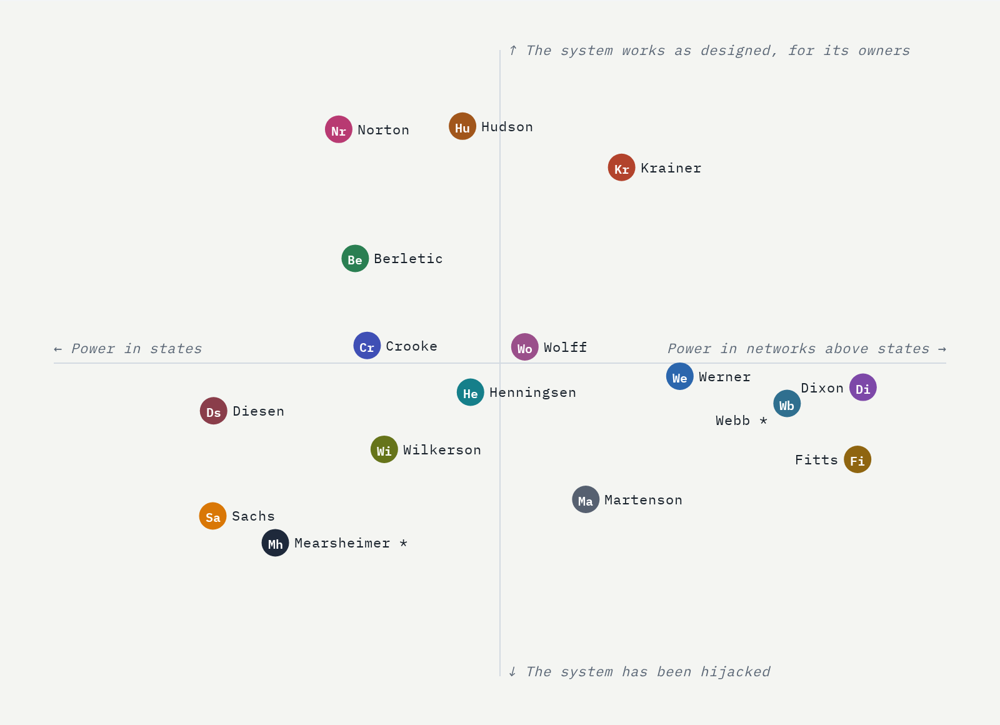
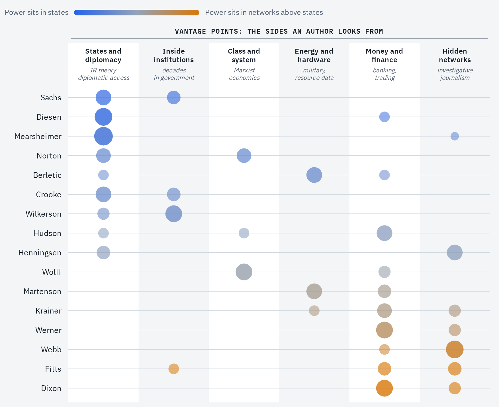
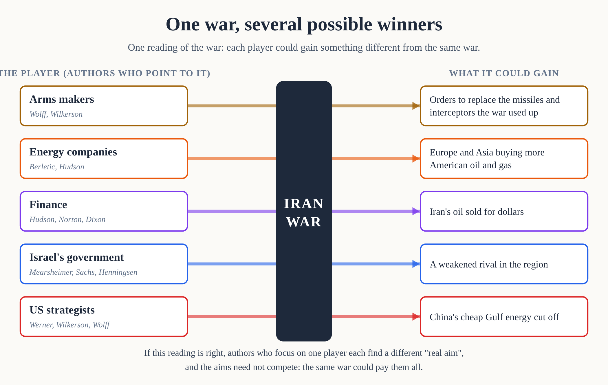

Fourteen Thinkers, Read Side by Side
When serious thinkers seem to contradict each other, and the official story is often spin, how do you find out what is true? Read them side by side, check every quote, and test their explanations against the facts.
The subject I chose is the US empire: who controls it, how it works, and why it goes to war. It makes a good test for two reasons. Sixteen thinkers I follow, none of whom speaks for a government or a party, have all discussed it, from Michael Hudson, who says creditors capture governments, to Simon Dixon, who says there is no one at the top at all. And deception is part of the subject: a government can arrange for a war to look like another country's doing, so the official story cannot simply be trusted. (The project began with fourteen authors, hence the title; two more were added later.)
The test case is the recent Iran war, fought by the US and Israel against Iran. Iran hit back hard, at US bases and at oil shipping in the Persian Gulf, and the war is still unresolved.
Doing this means reading all of them in their own words and comparing them claim by claim, which used to take a research team. I did it with an AI, which read the material, built the comparisons and checked every quotation long enough to verify against the original texts, while I corrected it where it misread people.
The idea behind the method
The method rests on one idea. A deception can fool a witness standing in one place, but it is very hard to stage something so that it looks right from every angle. The official story of a war is built to look right from one angle, the public's.
Stage magic shows the two ways this is done. The first is staging: a trick looks right only from the seats the magician chooses, and anyone who walks round to the side of the stage sees the hidden card. The defence against staging is to compare observers in different seats, which is what the sixteen authors provide. The second is misdirection: the magician draws every eye to one hand while the other does the work, which fools every seat at once. The defence against misdirection is different: ignore the show, and watch where things actually move, such as money, oil and weapons. The method uses both: comparing the authors (steps one to five) and following money, oil and weapons (step six).
The sixteen authors look at US power from many different angles. Each has a vantage point, usually set by their training and experience: a former banker sees credit and debt, a scholar of international relations sees governments, a former soldier sees weapons and supply lines, an investigative journalist sees hidden connections between powerful people. Each author sees one part of the truth clearly, misses the rest, and can be misled about the part they cannot see. But authors looking from different places are unlikely to all be misled in the same way, although, since all sixteen are critics of the official consensus, they may share some blind spots (see the limits at the end).
That is why comparing them gets closer to the truth than trusting any one of them. Comparing the authors does four things:
- It confirms. When authors with different vantage points reach the same conclusion from their own evidence, the conclusion has survived several angles and is more likely to be solid (step one), although agreement among authors chosen as critics of the consensus counts for less. Authors who sit close together may share blind spots, so agreement between them counts for less than agreement across camps (step five).
- It completes. Each author explains a different part of the system. Fitted together, the parts show how the whole system works (step two).
- It exposes. When authors disagree, the method asks why. Often each one is describing a different part of the same thing, and both are right. Sometimes they start from different assumptions, such as whether countries or the networks above them make the decisions. Naming the assumption helps show who the real actors are (steps three and four). And sometimes one of them is simply wrong, which is what step six tests.
- It tests. Different authors offer different explanations of the same event. Checking them all against the same facts shows which explanations survive, and the survivors are the explanations not yet contradicted, which is the best available guide to the real aims behind an event, especially when the official aims may be a cover (step six). Some survive only because they predict little, and the article says so where it happens.
The last step checks the checking: every quotation against the authors' own texts, and every reading of an author against how that author really talks (step seven). Each step below says what it does, then what it found about US power.
The full charts are at christiancadieux.github.io/fourteen-thinkers/author-axes.html, and the full written report combining their views, with every source, is on GitHub.

The group
The group: Richard Werner, Alex Krainer, Brian Berletic, Simon Dixon, Catherine Austin Fitts, Ben Norton, Patrick Henningsen, Chris Martenson, Michael Hudson, Alastair Crooke, Lawrence Wilkerson, Glenn Diesen, Whitney Webb, Richard Wolff, John Mearsheimer and Jeffrey Sachs.
I chose them because none of them speaks for a government or a party line, and all of them are critical of the US foreign-policy consensus. That shared outlook is useful for this test and is also a limit, discussed at the end. Beyond it they differ a lot:
- Werner is an economist known for his work on how banks create money.
- Krainer is a former hedge-fund manager and commodities trader.
- Berletic is a former US Marine who analyses wars through weapons and energy.
- Dixon is a former investment banker.
- Fitts was an assistant secretary of housing and a Wall Street banker.
- Norton and Henningsen are journalists who cover geopolitics.
- Martenson is a scientist turned analyst of energy and resources.
- Hudson is an economist who studies debt.
- Crooke is a former British diplomat and intelligence officer.
- Wilkerson is a retired army colonel who was Colin Powell's chief of staff.
- Webb is an investigative journalist who traces networks of money and intelligence.
- Wolff is a Marxian economist.
- Diesen and Mearsheimer are "realist" scholars of international relations, meaning they see world politics as a contest between states pursuing their own power.
- Sachs is an economist and long-time adviser to the United Nations.
The AI (Claude, from Anthropic) worked from their own material: interview transcripts, articles, essays, book chapters, about 170 pieces in all.
Step one: find the common ground
Why this step: it confirms. A claim reached by authors who look from different vantage points has survived several angles, so it is the firmest ground the authors offer, though not proof.
The first step is to count which claims are widely held. For each recurring claim, the AI listed which of the sixteen make it in their own material. Some claims are held by most of them: all but two say real decisions are made by people no one elected (unelected officials inside the state count here), and ten say the dollar system is a weapon. The two exceptions, Mearsheimer and Sachs, see elected leaders, and the lobbies pressing on them, as the ones deciding.
| Claim | Who makes it | Count |
|---|---|---|
| Real decisions are made by people no one elected (officials, donors or finance), not by elected leaders | all but Mearsheimer and Sachs | 14 |
| Left against right is the wrong way to see politics | Werner, Krainer, Dixon, Fitts, Henningsen, Martenson, Hudson, Norton, Berletic | 9 |
| US allies, Europe above all, are being stripped | Werner, Berletic, Dixon, Norton, Henningsen, Hudson, Wilkerson, Diesen, Wolff | 9 |
| The dollar system is a weapon, and it is under strain | Werner, Norton, Berletic, Dixon, Henningsen, Martenson, Hudson, Crooke, Wolff, Sachs | 10 |
| Crises and wars move wealth upward | Fitts, Dixon, Norton, Henningsen, Martenson, Wilkerson, Wolff, Sachs | 8 |
| Finance now makes money from money, not from producing things | Werner, Hudson, Krainer | 3 |
A count shows how widely a claim is held, not whether it is true.
Step two: assemble the pieces
Why this step: it completes. Each author sees one part of the system clearly; fitted together, the parts show how the whole system works, which no single author can show.
The second step is to fit their explanations together. Most of the authors do not try to explain all of US power. Each one goes deep on one or two parts of it, and keeps coming back to those parts across years of articles and interviews. For most authors, the AI picked out the part they explain in most depth in their own texts. These parts are the pieces.
The pieces matter because together they answer the basic questions about how any system of power runs: what it rests on, how it takes wealth, how it enforces its rules, how it wins consent, what it hides, and what can resist it. Sorted by those questions, the pieces form, on the authors' combined account, one machine:
- What it rests on: cheap physical energy (Martenson), and banks that create money by lending it (Werner).
- How it takes wealth: earning from owning land, loans and patents rather than from producing (Hudson); ownership of most large companies by a few asset managers (Dixon); policies that turn people's income into higher share prices for owners (Fitts); and taking wealth from other countries (Krainer).
- How it enforces its rules: the dollar system, backed by sanctions, proxy wars and blockades (Norton, Hudson, Berletic, Fitts, Henningsen).
- How it wins consent: media and think tanks that shape what the public believes (Henningsen).
- What it hides: government accounts that cannot be audited and a covert economy funded off the books (Fitts), and a coming digital control system, digital IDs and programmable central-bank money that could track and restrict spending (Fitts, Werner).
- What can resist it: the cultural cohesion that lets some societies hold together under pressure (Crooke).
Each author covers a few pieces well and barely touches the rest. Together they describe a whole.
Once their work is laid side by side, much of their apparent disagreement turns out to be people describing different floors of the same building.
Why does each author cover only a few pieces? Probably in part because of their vantage point, described in the section on the idea behind the method, as the chart below illustrates. Part of the pattern in the chart is built in, since an author who studies hidden networks is likely to find power in them; the most telling cases are the vantage points least tied to either conclusion. Authors who worked inside institutions mostly conclude that power sits in governments (Fitts is the exception), and those who look from energy or class are spread across the chart. The weights were assigned by the project, knowing each author's conclusions, so the chart illustrates the idea rather than proving it. So trust each author most on the part of the subject their vantage point lets them see, and least when they judge the whole subject from it. Mearsheimer argues persuasively that the war is failing its declared aims; whether the war made money for some Americans is a question his vantage point does not ask.

Step three: isolate the real disagreements
Why this step: it begins to expose. A disagreement can come from authors seeing different parts of the same thing, from different assumptions, or from one of them being wrong. Finding the real disagreements is the first step to telling which.
The third step is to find what they actually disagree about. Two disagreements matter most.
Who is at the top? Krainer describes a "monolithic and ruthless conspiracy". Dixon says the opposite: "This is systemic. There is no one on top. It's not an organized cabal." Norton and Wolff describe a ruling class acting largely in the open. Diesen needs no ruler at all: a declining power behaves predictably because of its position. Mearsheimer and Sachs look to governments and the lobbies that press on them. Mearsheimer, with Stephen Walt, wrote the best-known case that the Israel lobby steers US policy in the Middle East. Sachs explains the Iran war through two leaders, Trump and Netanyahu, and the religious nationalists around them.
What is the remedy? One camp wants strong sovereign states to discipline finance (Krainer, Hudson, Norton, Berletic and others), and Mearsheimer and Sachs also put their hope in states. Another wants decentralisation and personal exit (Werner, Fitts, Dixon, Martenson). Each camp's remedy is the other's main fear: the first sees a strong state as protection, the second sees it as the builder of the digital control system described in step two. Wolff offers a third way: make firms democratic from the inside, as worker cooperatives.
To make this visible, the AI scored each author from 1 to 5 on thirteen questions, with 1 and 5 the two opposite answers to each question, and attached the author's own words to every score. A score without a quote was not allowed.

Step four: fix the concepts
Why this step: it exposes. The biggest hidden assumption is often about who the actors are: countries, or networks above them. Naming that assumption is how the method starts to identify the real actors.
The fourth step is to check the concepts behind the questions, because a badly framed question hides the answer. This turned out to be the most revealing step.
Early versions of the charts asked "Is the US winning or losing?" That question quietly assumes that countries are the ones making the decisions, and that wars are won or lost by countries. Several of the authors think that way. Diesen and Mearsheimer, the realists, do, and so does Sachs. So does Wilkerson, the retired colonel, and often Crooke. When a policy hurts the country that pursues it, it can look puzzling. Diesen, for one, on Europe's policy towards Russia: "For me, it is completely irrational. It doesn't make any sense."
Others reject that frame entirely. Dixon: "America is not a country; it is a series of companies and a financial industrial complex." In his view, the same few asset managers, such as BlackRock, own "the military industrial complex, the financial industrial complex, the technical industrial complex", and the media as well. Wolff describes government as the arena where "clumps" of capitalists bargain. On this view the puzzle disappears. A policy can be irrational for a country and perfectly rational for whoever profits from it.
Some authors draw a finer line between the actors and the country. On this view, the people who decide are networks of finance and ownership that cross borders; Fitts says they are "sort of above countries". What the United States contributes is force: its military and its arms industry, which are still built mostly on American soil. The two parts do not move equally easily. Dixon sees finance already shifting to Asia ("the money's moving east"), while factories and bases stay where they are. And the arms industry, the most American part of the machine, now depends on parts and minerals from China, such as the rare earths used in missiles, which leaves it reliant on the rival it is meant to deter.
So the AI and I changed the question. "Is the US winning or losing?" became "Who gains from the wars?", and a new question was added: "Who are the actors, states or blocs?" On "Who are the actors?" the answers spread out sharply, from Diesen, Mearsheimer and Sachs at one end to Dixon, Fitts, Webb, Wolff and Krainer at the other. Wolff put the bloc view in one line: "Wars accelerate contracts to replace used-up arms and thereby profit military-industrial complexes."

The same shift exposes everyday language. For example, the phrase "this war cost us trillions" hides who pays and who is paid. The word "us" is wrong because there is no single payer. The money goes to the arms makers, their shareholders and their employees, and military spending is spread on purpose across "military bases in all 50 states", as Wolff puts it, so that every member of Congress has a stake. For the arms makers, their shareholders and workers, and those members of Congress, the war is income. The word "cost" is misleading because the money is not taken out of anyone's savings today: the US borrows it, and because the dollar is the world's reserve currency, investors everywhere keep lending, and the debt is rolled over and rarely paid down. The costs that do fall are of a different kind: on the people the war kills, the missiles it burns, and the interest future taxpayers will carry.
Step five: map who sits with whom
Why this step: it makes confirming honest. It shows who sits close to whom, so that agreement inside one cluster, where authors may share blind spots, is not mistaken for agreement across camps.
The fifth step is to see who is close to whom. Comparing how far apart each pair of authors' scores are shows two main camps, and inside the state camp a tighter group that thinks in terms of countries.
- One camp looks to states, as the main actors and the main hope: Norton, Hudson and Berletic, with Henningsen, Crooke, Wilkerson, Wolff, Diesen, Mearsheimer and Sachs nearby. (On the overall map, Henningsen and Wolff sit near the centre line.)
- The other places power in networks above countries: Werner, Fitts, Martenson and Webb, with Dixon further out. Krainer leans towards this camp, though he agrees with Hudson and Norton on many questions.
- Inside the state camp, a tighter group thinks in terms of countries: Diesen, Mearsheimer and Sachs entirely, and Wilkerson and Crooke mostly. Wolff sits in the state camp on most questions, even though he sees blocs as the actors and proposes his own remedy, worker cooperatives.
- The three state-centred scholars are the tightest cluster: Diesen, Mearsheimer and Sachs make up the three closest pairs in the set. Mearsheimer is also among the furthest from the network camp. Mearsheimer and Webb have several missing scores, so distances involving them are rougher.


Step six: test the explanations against facts
Why this step: it tests. The authors offer rival explanations of the same events. Checking all of them against the same facts shows which ones survive, and the survivors, the explanations not yet contradicted, are the best available guide to the real aims behind a war.
The sixth step matters most. Agreement is not proof, especially among people who share an outlook, so the authors' claims are checked in ways that do not depend on counting heads: forecasts against what happened, models against real cases, summaries against the documents they cite, explanations against what officials say and against tests that could prove them wrong, and the competing explanations of the Iran war against the facts.
Forecasts. The Iran war made forecasts checkable, because all but two of the sixteen had said something about it both before and after it began. These are examples, not a scorecard; the full list, with what each author said and when, is in the synthesis. Some got it right:
- Wilkerson, in November 2024: "I'm worried that we might be walking into a war that we cannot walk away from because of Netanyahu."
- Diesen, in March 2025, that if attacked, Iran "would hit back in a massive way".
Some did not. Dixon said in January 2026 that Iran had "already been regime changed" and that peace was coming, seven weeks before the war. That forecast failed. His deeper claim, that the IRGC, Iran's Revolutionary Guard, is "completely on board with everything that's happening", so that what looks like a war is a managed crisis, has not been tested. Iran's heavy strikes on US bases and Gulf shipping count against it, although Dixon could read them as part of the managed crisis; it would be weakened further if the IRGC's own leaders were targeted, or if Iran went for a decisive blow.
Cases. A real clash between two interest groups, or blocs, shows the "blocs" view at work. In an October 2026 interview Wolff described farmers, squeezed by diesel prices, asking Trump to ban diesel exports, and the refiners telling him: "We have been your loyal supporters. We don't want this." The ban was dropped, and the refiners won. One case proves little, and the account comes from Wolff, who holds the blocs view, but it is consistent with that view: when blocs collide, policy stalls, and in this case the side with more money behind it won.

Documents. When an author cites a document, the AI read the document itself. One example is a 2009 paper from the Brookings Institution, a leading Washington think tank, "Which Path to Persia?", cited by Berletic, which discusses deniability openly. One option it lays out is to let Israel strike Iran, so that criticism and retaliation would be "deflected away from the United States and onto Israel". In other words, a leading Washington think tank set out in writing an option for a US-backed war in which Israel would take the blame. The paper judged it a hard sell, since the planes and much of the money are American, but the option was on paper. So Israel looking responsible for the Iran war proves nothing on its own.
What officials say. The official reason for the war was to stop Iran from getting a nuclear weapon, a reason that was weaker than it sounded. Inspectors had verified Iran's compliance with a nuclear deal until the US left it in 2018. Iran then went past the deal's limits, enriching uranium to 60% and restricting inspectors' access, but US intelligence assessments up to 2025 still said Iran was not building a weapon. During the war, the US Treasury Secretary, Scott Bessent, described a different goal. Most of the world's oil is sold for US dollars, which many economists see as a pillar of the dollar's role as the world's main currency, and Iran had been selling its oil to China without being paid in dollars. In June 2026, Bessent told CNBC that "the Iranians will be invoicing in dollars" and that "Dollar dominance is essential." Asked whether this push to keep oil sold in dollars was a secret plan, Hudson answered: "It's been very overt, very overt." Bessent's words show what the Treasury says it wants, not necessarily why the war was fought; the same caution applies to every official statement, including this one.
Hypotheses. Each competing explanation comes with tests that could prove it wrong, and one has already failed as stated. The AI collected ten explanations, from a hidden directing hand to a plan that fails on contact with reality. One of them holds that finance can shift towards China and the rest of Asia while the arms industry stays rooted in the United States. If money is moving east, foreigners should be selling US government debt, so its first test was "foreign holdings of US Treasuries keep falling". The test as written failed, but a narrower version held:
- Central banks outside the West are cutting their Treasuries and buying gold. As of August 2026, China's central bank had bought gold for 22 months in a row.
- Total foreign holdings reached a record in June 2026, as private buyers bought more.
The hypothesis is now marked "mixed": its first test failed as stated, and only a narrower version holds. That is the value of a test that can fail.
Weighing the evidence. Counting authors cannot settle a question like what the Iran war is for. So the AI and I borrowed a method from intelligence analysis, developed by Richards Heuer, a CIA analyst, called analysis of competing hypotheses. You list facts, not opinions: documents, public data, and events the authors report, with authors' own reports marked as such. You mark each fact as fitting, contradicting, or irrelevant to each explanation. The winner is the explanation with the fewest solid facts against it, not the most in its favour, because most facts fit several stories at once. Facts that a capable actor could stage for appearances are flagged, and the ranking is computed with and without them. Official claims of wartime success are flagged for the same reason: early in a war, officials shrink the enemy, and later, when they want another round, they enlarge it. Losses a side admits about itself, and numbers from people not arguing a side, count for more.
The first grid asked what the Iran war is for, and tested five candidate answers drawn from the ten explanations. Two have no fact against them at all: a move against China, through its overland trade routes and energy, and a war for profit for the arms, energy and finance blocs. That is partly a weakness of the method: an explanation that predicts little is hard to contradict. Three more each have one mark against them, and each of those marks is a judgement rather than a hard fact, so the honest result is that the five are close to a tie. Against reading the war as a blunder: its targets, such as China's new railway through Iran, look strategically chosen, although a blunder can still have well-chosen targets. Against a war for US energy dominance: Europe's record purchases of Russian gas, although Europe is also buying more American gas (see the second grid below). Against a war for Israel's own aims: the Brookings paper shows that a US option existed in which Israel only appears to lead, which weakens the inference from appearances but does not show that this option was used. The gaps between these five are small, and every mark is a judgement, so each "against" is shown with its reason, and a reader can disagree with a specific mark instead of with the whole conclusion.
The size of the lobbies gives a sense of proportion. By the count of OpenSecrets, which tracks money in US politics, the defense industry spent about $150 million on federal lobbying in the 2024 cycle, and the oil and gas industry about as much; AIPAC, the main pro-Israel lobby, spent about $3.3 million, though its weight is in election spending, about $95 million in 2024. Mearsheimer and Walt's case, in its strongest form, is that the lobby's influence works through elections and through shaping debate, not through lobbying budgets. Several other authors see Israel not as a separate player but as part of the machinery. Dixon puts it bluntly: for what is "really, really illegal", use "your Israeli proxy".
Four of these five answers need not compete; only the blunder reading does. On one reading, illustrated by the chart below, one war can pay several players at once, and each audience can be told a different aim. Three aims illustrate this. The public hears about a nuclear weapon. Officials openly name the dollar: on this view the goal is not regime change but regime control, a government in Tehran that stays in place but sells its oil for dollars. Venezuela may be an example: in January 2026 the US removed its president, Nicolás Maduro; his vice-president took over, the state was left standing, and its oil is now sold for dollars, as the US Treasury Secretary has said. A third possible aim, the squeeze on Gulf oil, which hurts China and makes the world more dependent on American energy (the grid's China and energy answers), is never stated, so it can only be inferred, and it is the hardest aim to show. A single action, such as a blockade of Iranian oil, can serve the dollar aim and the squeeze on Gulf oil at once.
Not every player knows every aim. On this reading, the people who know most are the planners: the intelligence services, military staff, think tanks and financial interests that design both the war and the story told about it. Henningsen describes how "western war planners can quickly construct an important leg in foreign policy messaging". A president can sincerely believe in the public aim, while the actions he orders also serve the others.

But a war can have a purpose and still fail. Wolff's own summary has both halves: its "goal was to reverse the decline of the US empire; its result was the opposite." So a second grid asked whether the US plan, whatever its purpose, is working, and here the facts are mostly public data:
- at least ten US radars destroyed in the first two weeks, four of them guiding THAAD batteries (THAAD and Patriot are US missile-defence systems);
- Patriot interceptor stocks down by about two-thirds and THAAD by over a third, with at least three years to rebuild them;
- THAAD interceptors pulled from South Korea and Patriots diverted from Ukraine;
- aircraft carriers resupplied from Diego Garcia, a US base in the Indian Ocean, 2,200 miles away, after the Bahrain base was hit.
"On track" had by far the most facts against it, though none of the sixteen argues it; it serves mainly as a foil. "Failing" and "profit either way" both fit, and both can be true, but "profit either way" cannot be contradicted by any outcome by its nature, so its clean score says little: an arms industry built for profit can enrich its contractors while the plan for dominance fails. The one solid fact against "failing" is that the US share of Europe's imports of liquefied natural gas keeps rising, even though Europe is also buying record amounts of Russian gas: the energy sales that some authors attribute to a plan are happening, even if the military side is failing.
A failed plan is not proof that there was no plan, and the AI first got this wrong. It proposed a test: if the war ended with Iran still selling its oil to China for Chinese yuan rather than dollars, that would show the war was not about the dollar. But the plan could be real and simply have failed, because Iran proved much harder to defeat than expected. Wolff put it in one line: "the Iranians are something new", with drones and missiles "buried in places where the Americans can't get them." So the test was split in two. Whether the plan existed is a question for evidence of intent, such as what officials say in public (see "What officials say" above); that evidence is still thin, one official statement and the authors' readings, and no outcome of the war can refute it. How the war ends shows only whether the plan worked: if Iran ends up selling its oil for dollars, it succeeded, and if Iran keeps selling for yuan, it failed.

Step seven: check every quote, and read people properly
Why this step: it checks the checking. Every other step depends on reading the authors correctly, so this step makes sure the quotations are real and the authors are not misread.
The last step checks the written report itself, first mechanically, then by human judgement. The AI made mistakes, and rereading its own work did not catch them. One was telling: it credited me with ideas that were already in the authors' work. What caught the mistakes was a mechanical check the AI built and ran. Every author's texts were saved in one folder per author. A short program checked every quotation in the document against those texts, and checked every count such as "seven of the sixteen" against the list of names. It flagged anything it could not find. By the end, more than 450 quotations had been checked. All of the 350-plus that are long enough to verify word for word were found in the authors' own texts; the rest are terms of one or two words, too short to check. Every one of the 191 scores on the charts carries a quote that passed the same check.
The lesson for anyone using AI on serious material: the synthesis is cheap now. The checking is the work.
Some of the most useful corrections came from me, because I had listened to these people for years.
Martenson often sounds baffled on camera, about markets or oil prices. The AI read that as uncertainty. I did not. In his own writing he is plain: "the price of oil is so heavily manipulated at this point that veteran commodities traders and portfolio managers like Jeff Currie are throwing in the towel in exasperation." (Currie is a former head of commodities research at Goldman Sachs.) In one interview he does both in a single breath. He calls it "what I will politely call shenanigans", then says the markets "were clearly manipulated". People who depend on video platforms may speak more carefully on camera than on the page, because platforms can restrict videos that make strong accusations. An honest synthesis has to read both.
It also took a lot of coaching to keep the AI on the rails. Left to itself, it read events the way they are presented. It took official statements at face value, when everyone involved has reasons to lie. It did not see that an empire which needs its population on its side also needs plausible deniability, so a war can be made to look like someone else's. And it judged each move on its own, when the players are willing to sacrifice many pawns to win a queen.
The limits
I want to be clear about what this does not show.
- It does not prove that their picture is right. These sixteen were chosen for a shared outlook, so part of their agreement was built in.
- Some of them share sources. Where two authors rely on the same document or witness, their agreement should count once, not twice, and the counts in step one do not fully correct for this.
- The scores are judgements. They rest on the authors' own words, but someone decided which words to use. The scores and the evidence grids were marked by the same person who holds the views being tested, with no independent second marker, and some questions were rewritten after the first scores came in.
- The checks were steered. The AI was coached to distrust official statements, which is itself a point of view the method carries, not a neutral setting.
- One test case. The facts were tested against the Iran war. Ukraine, which several of the authors discuss as much, would be the natural second test.
- Reading time was uneven. Some authors publish mostly behind paywalls or in video, so they were read less.
What it does show is narrower and, I think, more useful. Where a group of serious thinkers, none of them speaking for a government, converges, the agreement is worth taking seriously, though not as proof. Where they split, the split can usually be reduced to one or two precise questions. And those questions can often be tested.
What it means
Laid side by side like this, thinkers like these could start to work as a team: not by agreeing on everything, but by seeing where they already agree and where they differ, and why.
For more detail: the full charts page, including the evidence grids, is at christiancadieux.github.io/fourteen-thinkers/author-axes.html, and the full written synthesis is at github.com/christiancadieux/fourteen-thinkers/blob/main/synthesis.md. The saved source texts and the program that checks every quote are on GitHub at github.com/christiancadieux/fourteen-thinkers.